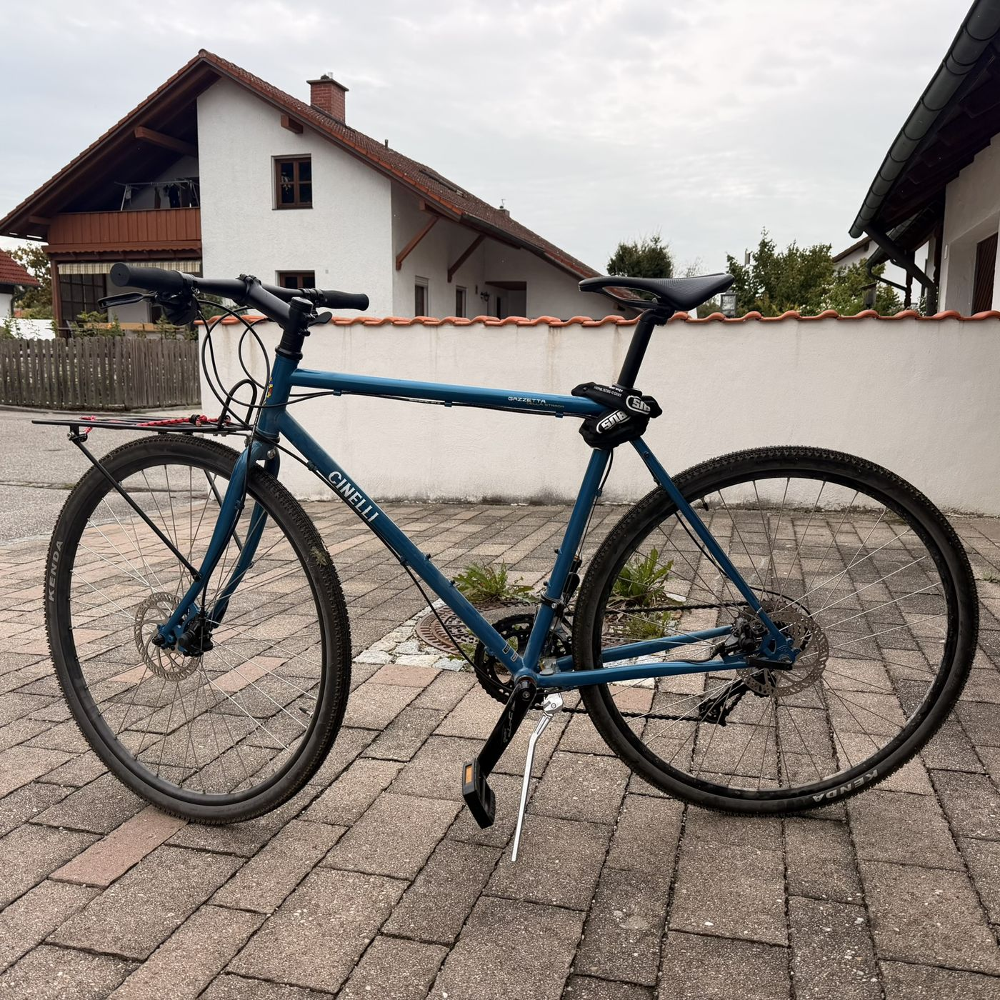
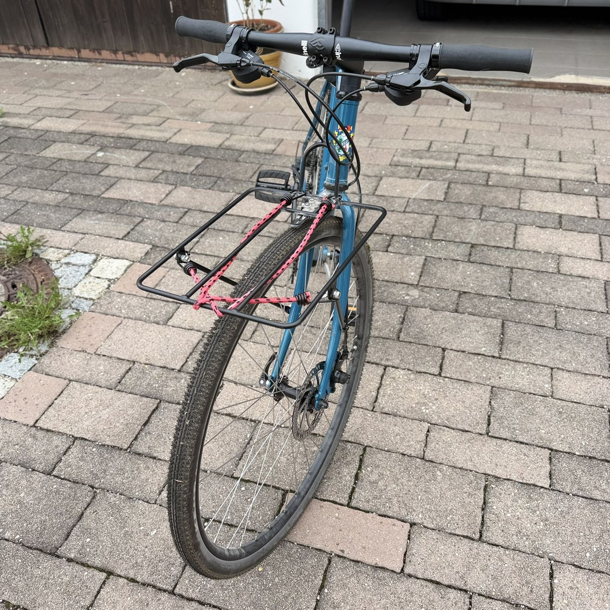

Cinelli Gazzetta della Strada

Stahlrahmen-Bike von Cinelli für Stadt und Landstraße statt reiner Renngeometrie – komfortabler ausgelegt und mit Ösen für Gepäckträger und Schutzbleche gedacht.
Rahmen
Rahmen aus doppelt konifiziertem Columbus-Cromor-Stahl, Gabel aus Columbus-Cr-Mo-Stahl, 1 1/8". Reifenfreiheit bis 700x44 mm (mit Schutzblechen bis 700x40c), Ösen vorne und hinten für Gepäckträger und Schutzbleche.
Bremsen & Laufräder
Mechanische Scheibenbremsen mit 160-mm-Rotoren. Felgen in 700C, bereift ab Werk meist mit Kenda Flintridge 700x35c.
Antrieb
microSHIFT Marvo LT Schaltwerk mit passendem microSHIFT-Schalthebel, 9-fach. Kurbel- und Kassettendetails sind hier noch nicht final verifiziert.
Gewicht
Herstellerangabe rund 12,5 kg (Größe M) – deutlich mehr als bei den Carbon-Rennrädern oben, dem Stahlrahmen und der Alltagsausstattung entsprechend.

Warum dieses Bike
Als täglicher Commuter zur Arbeit gedacht. Stahlrahmen, Scheibenbremsen und die Alltagstauglichkeit (Ösen für Schutzbleche und Gepäckträger) waren mir dafür wichtiger als Rennrad-Optimierung.